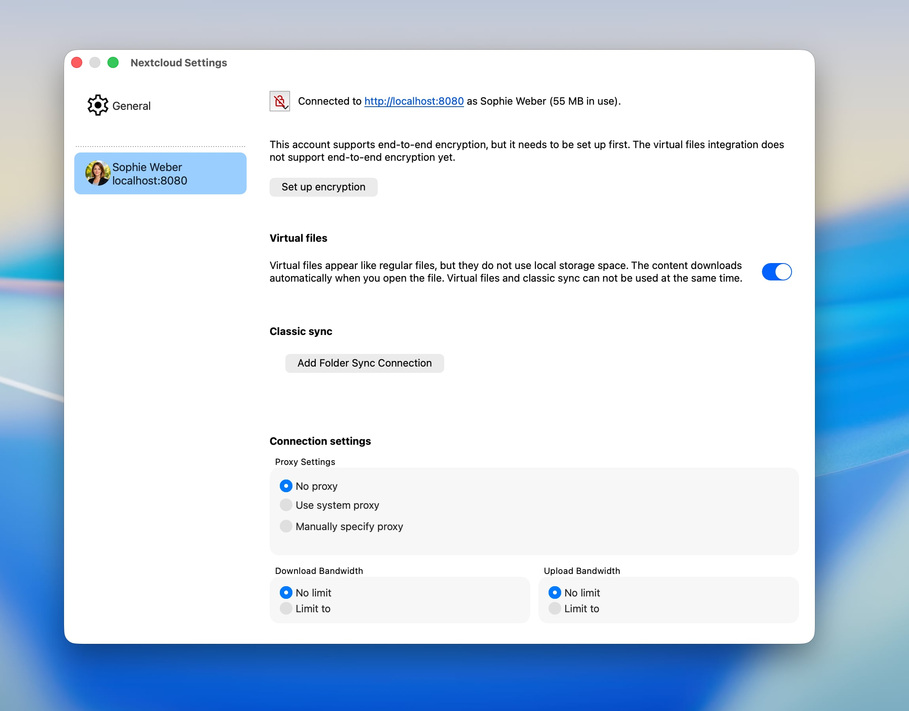
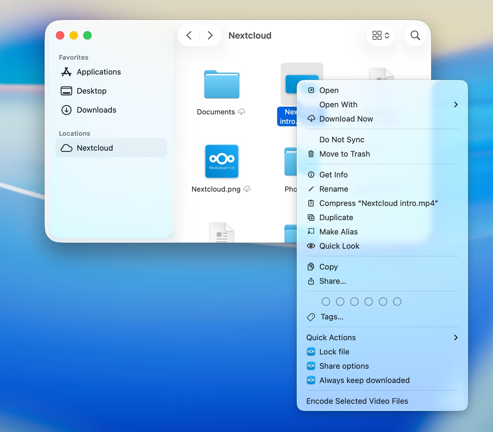

macOS Virtual Files-Client
Unter macOS kann unser Kunde Nextcloud-Dateien nahtlos als Dateianbietererweiterung in macOS integrieren. Bei jedem neu konfigurierten Nextcloud-Konto ist diese Integration standardmäßig aktiviert.
Unterstützte Funktionen
Dateien oder ganze Ordner offline verfügbar halten
Lokalen Speicherplatz freigeben, indem lokale Kopien entfernt werden, ohne Elemente zu löschen.
Intelligente und automatische lokale Datenlöschung
Dateivorschau im Finder für noch nicht heruntergeladene Dateien
Unterstützung für Apple-spezifische Formate, zum Beispiel Pages-, Numbers- oder Keynote-Pakete
Unterstützung für serverseitige Dateisperrung (sofern vom verbundenen Server unterstützt)
Unterstützung für „Lokal bearbeiten“
Mit anderen Benutzern teilen
Serverseitige Aktionen, die direkt in das Kontextmenü des Finders integriert sind
Automatisches Erkennen von serverseitigen Änderungen
Konfiguration
Einstellungen für virtuelle Dateien können für jedes Konto einzeln über das Einstellungsfenster des Nextcloud-Desktop-Clients angepasst werden.

Hier kann die Integration in den Finder aktiviert oder deaktiviert werden.
Wenn die Dateianbietererweiterung deaktiviert wird, während noch nicht synchronisierte Änderungen vorhanden sind, speichert macOS die nicht synchronisierten Elemente in einem Ordner, der automatisch angezeigt wird, nachdem die Integration deaktiviert wurde.
Finder-Integration
Unter macOS wird ein externer Speicher wie ein Nextcloud-Dateikonto in der Finder-Seitenleiste als eigener Speicherort angezeigt. Der tatsächliche Speicherort der Inhalte auf der Festplatte wird von macOS festgelegt.

Bemerkung
Um die serverseitige Änderungserkennung zu beschleunigen, empfehlen wir, die App notify_push auf Ihrem Nextcloud-Server zu aktivieren. Diese App benachrichtigt den Desktop-Client umgehend über Änderungen auf dem Server und verkürzt so die Zeit, bis diese im Finder angezeigt werden. Andernfalls muss der Client den Server abfragen, was die Verzögerung zwischen einer Änderung auf dem Server und ihrer lokalen Sichtbarkeit erhöht.
Sync-Statusanzeigen
Ähnlich wie bei klassischen Synchronisierungsordnern zeigt der Finder Statusanzeigen neben den Objekten an. Im Gegensatz zu den benutzerdefinierten Anzeigen in klassischen Synchronisierungsordnern werden diese standardisierten Anzeigen von macOS bereitgestellt, um ein einheitliches Erscheinungsbild in allen Cloud-Speicher-Apps zu gewährleisten, die ein Benutzer auf seinem System verwendet.
Wolke mit Pfeil nach unten: Das Element und seine Unterelemente wurden noch nicht heruntergeladen. Sie können heruntergeladen werden, sofern eine Netzwerkverbindung besteht.
Umrandete Wolke: Das Element ist in seinem aktuellen lokalen Zustand noch nicht vollständig hochgeladen.
Durchgestrichene Wolke: Das Element ist von der Synchronisierung ausgeschlossen.
Kreisdiagramm: Das Element wird gerade hoch- oder heruntergeladen, und der Fortschritt wird visualisiert.
Ausgefüllter Kreis mit nach unten gerichtetem Pfeil: Der Artikel ist offline verfügbar und wird lokal gespeichert.
Kein Symbol: Element ist offline verfügbar und aktuell.
Kontextmenüaktionen

Die Dateianbietererweiterung bietet außerdem spezielle Nextcloud-Funktionen über das Kontextmenü im Finder.
Heruntergeladene Dateien behalten
Je nach Downloadstatus eines Ordners oder einer Datei bietet das Kontextmenü an, das Element entweder dauerhaft heruntergeladen zu lassen oder lokalen Speicherplatz freizugeben, indem die lokale Kopie entfernt wird, ohne das Element tatsächlich zu löschen. So bleibt es jederzeit zum Download vom Server verfügbar.
Sperren

Wenn der Server das Sperren von Dateien unterstützt, bietet der Client die Möglichkeit, Dateien im Finder manuell zu sperren und zu entsperren.
Teilen

Wenn der Server das Teilen unterstützt und das Element zum Teilen freigegeben werden darf, können Sie neue Freigaben erstellen oder bestehende Freigaben für ein Element direkt über das Kontextmenü im Finder verwalten, genau wie in der Nextcloud-Weboberfläche.
Dateiaktionen
Sind auf dem Server Apps installiert, die Aktionen für die ausgewählten Dateitypen bereitstellen, stehen diese Aktionen auch im Kontextmenü des Finders zur Verfügung. Dadurch können Sie serverseitige Funktionen Ihrer Nextcloud-Instanz direkt im Finder nutzen.
Bekannte Probleme
Konflikt mit macOS-Erweiterungen
Aufgrund technischer Einschränkungen in macOS, die von Apple vorgegeben werden, ist es nicht möglich, die Finder-Integration für klassische Synchronisierungsordner parallel zu einer aktivierten Integration virtueller Dateien zu nutzen. Dies bedeutet, dass Objektdekorationen und Kontextmenüoptionen für klassische Synchronisierungsordner nicht verfügbar sind, solange die Dateianbietererweiterung aktiviert ist.
Alias-Dateien
Wenn Sie eine in Nextcloud gespeicherte macOS-Aliasdatei zum ersten Mal auf einem Gerät öffnen, auf dem sie noch nicht heruntergeladen wurde, kann es vorkommen, dass die Datei in einem Texteditor als Binärdokument geöffnet wird, anstatt direkt zum Zielverzeichnis zu springen. Dies liegt daran, dass macOS die Art des Öffnens einer Datei bereits vor dem Herunterladen festlegt und Aliasdateien auf dem Server keine erkennbare Dateierweiterung oder Typinformationen enthalten – sie lassen sich nur anhand ihres Inhalts identifizieren. Sobald die Datei einmal geöffnet oder heruntergeladen wurde, erkennt Nextcloud Desktop sie als Alias und speichert diese Information lokal, sodass alle nachfolgenden Öffnungen korrekt funktionieren. Um dieses Problem vollständig zu vermeiden, klicken Sie vor dem ersten Öffnen mit der rechten Maustaste auf die Aliasdatei im Finder und wählen Sie Heruntergeladene Dateien behalten.